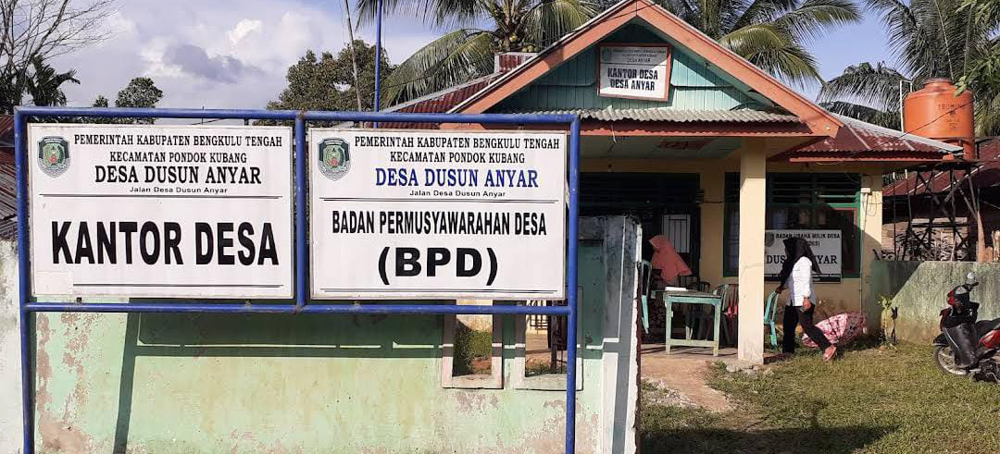

Kantor Desa Dusun Anyar
Kantor Desa Dusun Anyar

Polindes Dusun Anyar
Polindes Dusun Anyar

Masjid Al-Mukhlisin
Desa Dusun Anyar
Isi konten potensi desa di sini.
Kantor Desa Dusun Anyar
Polindes Dusun Anyar
Desa Dusun Anyar
Desa Dusun Anyar, Kecamatan Pondok Kubang, Bengkulu Tengah
Desa Dusun Anyar merupakan sebuah desa yang terletak di wilayah Kecamatan Pondok Kubang, Kabupaten Bengkulu Tengah, Provinsi Bengkulu. Desa ini didirikan kurang lebih pada tahun 1950 an dan hingga kini telah mengalami banyak perkembangan di wilayah tersebut.
Desa Dusun Anyar memiliki kode wilayah desa 17.09.09.2003, yang digunakan untuk mengidentifikasi wilayah administratif desa ini dalam berbagai keperluan pemerintahan dan statistik dengan tingkat perkembangan desa swadaya dan luas wilayah sekitar " ".
Sebelah Utara : Desa Batu Raja
Sebelah Selatan : Pondok Kubang
Sebelah Barat : Renah Lebar
Sebelah Timur : Tanjung Dalam
Jarak dari pemerintahan kecamatan : +-1,5
Jarak dari pemerintahan kota : +- 30
Jarak dari ibukota kabupaten : +- 14
jarak dari ibukota provinsi : +- 40
Laki laki : 107
Perempuan : 92
Selamat datang di Desa Dusun Anyar, berikut ini adalah gambaran singkat tentang potensi desa Dusun Anyar yang mengangkat kelapa sawit sebagai harta berharga dan simbol kebanggaan.
Perkebunan sawit Desa Dusun Anyar adalah salah satu aset desa yang menghasilkan sawit berkualitas tinggi. Desa ini diberkahi dengan kekayaan sumber daya alam yang memadai, seperti tanah subur, iklim yang sejuk dengan curah hujan yang cukup, serta lingkungan asri. Petani di desa ini dengan penuh cinta dan dedikasi mengelola perkebunan sawit mereka. Perkebunan kelapa sawit Desa Dusun Anyar telah menjadi sumber pendapatan bagi masyarakat setempat.

Luas Desa : +- 750 hektar
Luas Lahan Kelapa Sawit Sudah Berbuah : +- 254 hektar
Luas Kebun Kelapa Sawit baru tanam : +- 90 hektar
Luas Lahan Yang Belum Ditanami Kelapa Sawit : +- 406 hektar
Pembangunan infrastruktur yang merata di seluruh wilayah suatu negara merupakan salah satu indikator keberhasilan pembangunan. Sayangnya, kondisi jalan desa di banyak daerah sering mengalami kerusakan yang parah. Hal ini dapat dipandang sebagai buntut dari ketidakmerataan pembangunan yang masih menjadi masalah di banyak negara, terutama di daerah pedesaan. Salah satunya jalan Desa Dusun Anyar merupakan jalan yang menghubungkan masyarakat pedesaan dengan pusat ekonomi dan perkotaan. Kondisi jalan yang buruk ini dapat memiliki dampak signifikan pada kehidupan sehari-hari penduduk Desa Dusun Anyar, termasuk akses terhadap layanan publik seperti kesehatan, pendidikan, dan pasar. Selain itu, jalan yang rusak juga dapat memperlambat pertumbuhan ekonomi di daerah tersebut.